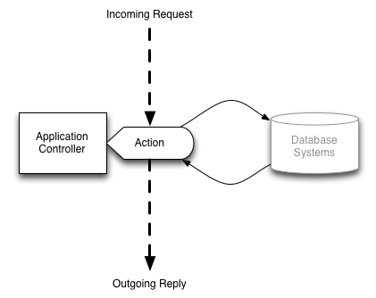
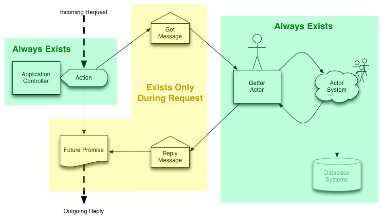

<?xml version="1.0" encoding="UTF-8"?>
<rss version="2.0"
	xmlns:content="http://purl.org/rss/1.0/modules/content/"
	xmlns:wfw="http://wellformedweb.org/CommentAPI/"
	xmlns:dc="http://purl.org/dc/elements/1.1/"
	xmlns:atom="http://www.w3.org/2005/Atom"
	xmlns:sy="http://purl.org/rss/1.0/modules/syndication/"
	xmlns:slash="http://purl.org/rss/1.0/modules/slash/"
	>

<channel>
	<title>Underflow &#187; scala</title>
	<atom:link href="http://www.underflow.ca/blog/tag/scala/feed" rel="self" type="application/rss+xml" />
	<link>http://www.underflow.ca/blog</link>
	<description>Thoughts, Ideas, Articles, and Essays by Jacob Groundwater</description>
	<lastBuildDate>Wed, 25 Apr 2012 07:12:26 +0000</lastBuildDate>
	<language>en-US</language>
	<sy:updatePeriod>hourly</sy:updatePeriod>
	<sy:updateFrequency>1</sy:updateFrequency>
	<generator>http://wordpress.org/?v=3.4.1</generator>
	<div style="color: #C09853;background-color: #FCF8E3;border: 1px solid #FBEED5;padding: 8px 35px 8px 14px;margin-bottom: 18px;-webkit-border-radius: 4px;-moz-border-radius: 4px;border-radius: 4px;">This site has been archived, for my current blog please go <a href=../../../../index.html>here</a>.</div>	<item>
		<title>Mock Dependency Injection in Play! 2.0</title>
		<link>http://www.underflow.ca/blog/935/mock-dependency-injection-in-play-2-0?utm_source=rss&#038;utm_medium=rss&#038;utm_campaign=mock-dependency-injection-in-play-2-0</link>
		<comments>http://www.underflow.ca/blog/935/mock-dependency-injection-in-play-2-0#comments</comments>
		<pubDate>Wed, 25 Apr 2012 07:12:26 +0000</pubDate>
		<dc:creator>jacob</dc:creator>
				<category><![CDATA[Journal]]></category>
		<category><![CDATA[playframework]]></category>
		<category><![CDATA[plugins]]></category>
		<category><![CDATA[programming]]></category>
		<category><![CDATA[scala]]></category>
		<category><![CDATA[testing]]></category>

		<guid isPermaLink="false">http://www.underflow.ca/blog/?p=935</guid>
		<description><![CDATA[Dependency injection can look elegant, or like a nightmare. I appreciate elegance, sometimes too much. In the last few months I've been learning the discipline of getting things done at the expense of elegance. I have been learning the Playframework, a rapid development platform using Scala, and blogging about my experiences. Although dependency injection is a more-or-less solved problem in Scala with the cake pattern, meshing it with play is a little more difficult. I would like a DI strategy that accommodates the easy mocking of controllers, actors and database without much effort. Some of my goals before proceeding: i don't want to revolve my code around it not yet another framework should not interfere with RAD the compiler should be able to notify me of problems (no casting) not a lot of thinking to get it right (get it right the first time) The road I set down, and ultimately settled upon is by using the Play plugins. Whether this road is practical and/or elegant remains to be seen. The main reason for plugins is because anything that loads via a plugin can be swapped out during testing. Thus, anything we need to mock must load via a plugin. From here there are two approaches, either: use micro-plugins, i.e. one for each controller, actor and database use a single, monolithic plugin A micro-plugin architecture would define a plugin for each controller, set of actors, and other testable components. Dependencies are injected via plugins at runtime. Plugins are capable of querying for other plugins when booting. While this would define an incredibly modular design, I think it's massive overkill. I want a design that is easy to understand at a single glance. The micro plugin approach requires many configuration lines in the play.plugins file. It's easy to miss one, and the compiler errors are not that helpful. In addition, in all your efforts to become modular you can accidentally couple your code in some other way. At some point in the future, I believe we will shift to a more modular design, but that idea is still immature and needs time to form. Thus we're left with monolithic plugins. Monolithic plugins are nice because all your wiring is in one place. There should be no surprises. A quick glance at the plugin code reveals all your applications configurations and components. What's nice is that the monolithic plugin is somewhat orthogonal to your dependency injection framework, you can define and wire your dependencies with the standard cake pattern. Use the Cake Pattern The cake pattern has been described as _slices_ of a cake. I prefer to think in terms of ingredients, or mixins. The Kitchen Pattern I would love to coin a new scale term, so here is my attempt. I present what I call the kitchen pattern for play applications, which is inspired by the following quote. All problems in computer science can be solved by another level of indirection The kitchen pattern uses the cake patter. It does not [...]]]></description>
			<content:encoded><![CDATA[<p>Dependency injection can look elegant, or like a nightmare. I appreciate elegance, sometimes too much. In the last few months I've been learning the discipline of getting things done at the expense of elegance.</p>
<p>I have been learning the Playframework, a rapid development platform using Scala, and blogging about my experiences. Although dependency injection is a more-or-less solved problem in Scala with the cake pattern, meshing it with play is a little more difficult. I would like a DI strategy that accommodates the easy mocking of controllers, actors and database without much effort.</p>
<p>Some of my goals before proceeding:</p>
<ul>
<li>i don't want to revolve my code around it</li>
<li>not yet <em>another</em> framework</li>
<li>should not interfere with RAD</li>
<li>the compiler should be able to notify me of problems (no casting)</li>
<li>not a lot of thinking to get it right (get it right the first time)</li>
</ul>
<p>The road I set down, and ultimately settled upon is by using the Play plugins. Whether this road is practical and/or elegant remains to be seen.</p>
<p>The main reason for plugins is because anything that loads via a plugin can be swapped out during testing. Thus, anything we need to mock must load via a plugin.</p>
<p>From here there are two approaches, either:</p>
<ol>
<li>use micro-plugins, i.e. one for each controller, actor and database</li>
<li>use a single, monolithic plugin</li>
</ol>
<p>A micro-plugin architecture would define a plugin for each controller, set of actors, and other testable components. Dependencies are injected via plugins at runtime. Plugins are capable of querying for other plugins when booting. While this would define an incredibly modular design, I think it's massive overkill.</p>
<p>I want a design that is easy to understand at a single glance.</p>
<p>The micro plugin approach requires many configuration lines in the play.plugins file. It's easy to miss one, and the compiler errors are not that helpful.</p>
<p>In addition, in all your efforts to become modular you can accidentally couple your code in some other way.</p>
<p>At some point in the future, I believe we will shift to a more modular design, but that idea is still immature and needs time to form.</p>
<p>Thus we're left with monolithic plugins.</p>
<p>Monolithic plugins are nice because all your wiring is in one place.<br />
There should be no surprises. A quick glance at the plugin code reveals all your applications configurations and components.</p>
<p>What's nice is that the monolithic plugin is somewhat orthogonal to your dependency injection framework, you can define and wire your dependencies with the standard cake pattern.</p>
<h2>Use the Cake Pattern</h2>
<p>The cake pattern has been described as _slices_ of a cake. I prefer to think in terms of ingredients, or mixins.</p>
<pre><pre class="brush: scala; title: ; notranslate">
package controllers

case class Application(actor: ActorRef) extends Controller {
    def index = Action{...}
}

trait ApplicationMixin {
    val actor: ActorRef
    lazy val application = Application(actor)
}

object MixingBowl extends ApplicationMixin {
    val actor = current.actorOf(Props[MyActor])
}

// a valid application controller is avaialble
// at controllers.MixingBowl.application
</pre>
<h2>The Kitchen Pattern</h2>
<p>I would love to coin a new scale term, so here is my attempt. I present what I call the kitchen pattern for play applications, which is inspired by the following quote.</p>
<blockquote><p>All problems in computer science can be solved by another level of indirection</p></blockquote>
<p>The kitchen pattern <em>uses</em> the cake patter. It does not modify the cake ingredients, your dependency injection code remains <em>unchanged</em>. Instead the kitchen pattern is used to serve various cakes, depending on the requirements. The three components of the kitchen patter are:</p>
<ol>
<li>the menu (trait)</li>
<li>the chef (class)</li>
<li>the kitchen (object)</li>
</ol>
<p>The menu makes promises of what to expect, like a chocolate cake or an application controller. The chef decides <em>how</em> to bake the cake; different chefs can satisfy the menu in different ways. Your <code>test</code> chefs will serve up mock cakes, your production chef serves the real deal. The kitchen is necessary to combine the menu and chef. Without the kitchen, nothing gets made. In summary:</p>
<ul>
<li>there is one menu</li>
<li>there can be many chefs</li>
<li>there is one kitchen</li>
</ul>
<p>The kitchen pattern is another layer on top of the cake pattern. Keep the above cake pattern intact, but add the following:</p>
<pre><pre class="brush: scala; title: ; notranslate">
// --- Kitchen pattern --- //
package restaurant

import play.api.Play.current
import play.api.Plugin

trait Menu extends Plugin {
    val application: controllers.Application
}

class HeadChef(playapp: play.api.Application) extends Menu {
    val application = controllers.MixingBowl.application
}

object Kitchen {
    val menu: Menu = current.plugin(classOf[Menu]).get
}

// A pluggable controller is available at
// restaurant.Kitchen.menu.application
</pre>
<p>The head chef will not be found by the application unless it is listed as a plugin.<br />
Add the following to the <code>conf/play.plugins</code> file:</p>
<pre><pre class="brush: plain; title: ; notranslate">5000:restaurant.HeadChef</pre>
<p>The number is used to weigh competing plugins, I use 5000 because that's what the plugin tutorial uses.</p>
<p>Our application will now load the head chef whenever running in production.</p>
<h2>Testing</h2>
<p>By having the router traverse the kitchen plugin, our application can be re-programmed at test time.</p>
<pre><pre class="brush: scala; title: ; notranslate">
class TestChef extends Menu {
    val application = // Mock Controller
}

class Test extends Specification {
    &quot;application&quot; should {
        &quot;load mock dependency&quot; in {
            running(TestServer(9000, FakeApplication(

            additionalPlugins = Seq(&quot;test.TestChef&quot;)

            )), HTMLUNIT) { browser =&amp;gt;
            browser.goTo(&quot;http://localhost:9000&quot;)
            // Test mock controller
            }
        }
    }
}
</pre>
<p>The TestChef plugin loaded by our test server will override the HeadChef. Since the application router traverses our kitchen, which has now load the test chef, and selenium tests will encounter mock controllers along the way. A mock controller can be used to test your views. Create additional chefs for mocking other components such as actors and databases.</p>
]]></content:encoded>
			<wfw:commentRss>http://www.underflow.ca/blog/935/mock-dependency-injection-in-play-2-0/feed</wfw:commentRss>
		<slash:comments>1</slash:comments>
		</item>
		<item>
		<title>Monads in Scala</title>
		<link>http://www.underflow.ca/blog/820/monads-in-scala?utm_source=rss&#038;utm_medium=rss&#038;utm_campaign=monads-in-scala</link>
		<comments>http://www.underflow.ca/blog/820/monads-in-scala#comments</comments>
		<pubDate>Mon, 23 Apr 2012 10:22:00 +0000</pubDate>
		<dc:creator>jacob</dc:creator>
				<category><![CDATA[Journal]]></category>
		<category><![CDATA[monad]]></category>
		<category><![CDATA[programming]]></category>
		<category><![CDATA[scala]]></category>

		<guid isPermaLink="false">http://www.underflow.ca/blog/?p=820</guid>
		<description><![CDATA[Preamble I hate it when I don't understand something. It bugs me; it nags at me. I like to straddle that thin line between confidence and over-confidence, believing that there is no topic I can't learn. There are of course many topics I don't care to learn, but there is an endless sea of topics I do want MUST learn. I like programming, not pure theory, not pure application. I am obsessed with good practices. This at times radically cuts into my productivity, but I am too stubborn to change. Instead I try to find how to apply my obsession. I like to think I'm a decent teacher, thankfully I usually receive feedback validating my opinion. I enjoy tackling complex ideas and breaking them down into more teachable components. This applies as much to programming as anything. My most recent conceptual-nemesis has been Monads. (I think the name Monad belongs in the hall of mathematical jargon that makes me giggle, along with Homomorphism, Wiener Measure1, and the Hairy Ball Theorem2.) *ahem* Anyways... &#60;awkward silence&#62; if you pay any attention to functional programming you'll have heard of them. I don't know why, but Monads just would not mentally digest for the longest time. I read Wikipedia, I read blogs, I watched videos. I just couldn't fully realize them in my head. Mission Accomplished? I think I now understand Monads, and if what I said above is true now I should be able to teach them to others. One technique I've learned from teaching is that teaching is a lot like the movie Inception... I mean I N C E P T I O N. One only needs to completely communicate the seed of the idea, not the complete picture. The complete picture should however follow from a series of what I call natural questions3. I will explain Monads not as a complete picture, but as a seed of an idea. Further more, I will explain in the context of programming, not category theory. What is a Monad? A Monad is an object that wraps another object. Instead of manipulating the underlying object directly, you pass the Monad mini-programs, i.e. functions, to perform the data manipulation of the underlying object. The Monad chooses how to apply the program to the underlying object. A trivial Monad just applies any such function directly, game over. Non-trivial Monads will do something else entirely. It is not a requirement of the Monad to apply the function in a specific way, or at all. One example of a Monad that ignores all programs it receives is the None Monad from Scala. The Monad None indicates its wrapped data is either incomplete, missing or corrupt, so further data manipulation, via received programs, makes no sense. Monads in Action Imagine that we are building an e-commerce site. It's our first attempt so we wish to remain agile and prefer loose coupling between the various components. When it comes to processing orders, we imagine a workflow roughly as follows: However [...]]]></description>
			<content:encoded><![CDATA[<h2>Preamble</h2>
<p>I hate it when I don't understand something. It bugs me; it nags at me. I like to straddle that thin line between confidence and over-confidence, believing that there is no topic I can't learn. There are of course many topics I don't care to learn, but there is an endless sea of topics I do <del>want</del> MUST learn.</p>
<p>I like programming, not pure theory, not pure application. I am obsessed with good practices. This at times radically cuts into my productivity, but I am too stubborn to change. Instead I try to find how to apply my obsession.</p>
<p>I like to think I'm a decent teacher, thankfully I usually receive feedback validating my opinion. I enjoy tackling complex ideas and breaking them down into more teachable components. This applies as much to programming as anything.</p>
<p>My most recent conceptual-nemesis has been Monads. (I think the name Monad belongs in the hall of mathematical jargon that makes me giggle, along with Homomorphism, Wiener Measure<sup><a href="../../../820/monads-in-scala/index.html#footnote_0_820" id="identifier_0_820" class="footnote-link footnote-identifier-link" title="http://planetmath.org/encyclopedia/WienerMeasure.html">1</a></sup>, and the Hairy Ball Theorem<sup><a href="../../../820/monads-in-scala/index.html#footnote_1_820" id="identifier_1_820" class="footnote-link footnote-identifier-link" title="http://en.wikipedia.org/wiki/Hairy_ball_theorem">2</a></sup>.) *ahem*</p>
<p>Anyways... &lt;awkward silence&gt; if you pay any attention to functional programming you'll have heard of them. I don't know why, but Monads just would not mentally digest for the longest time.</p>
<p>I read Wikipedia, I read blogs, I watched videos. I just couldn't fully realize them in my head.</p>
<h2>Mission Accomplished?</h2>
<p>I think I now understand Monads, and if what I said above is true now I should be able to teach them to others. One technique I've learned from teaching is that teaching is a lot like the movie Inception...<br />
I mean <strong>I N C E P T I O N</strong>.</p>
<p>One only needs to completely communicate the seed of the idea, not the complete picture. The complete picture should however follow from a series of what I call <strong>natural questions</strong><sup><a href="../../../820/monads-in-scala/index.html#footnote_2_820" id="identifier_2_820" class="footnote-link footnote-identifier-link" title="A natural question is hard to explain, I don&#039;t have a good definition just yet. It&#039;s kind of a what if question.">3</a></sup>.</p>
<p>I will explain Monads not as a complete picture, but as a seed of an idea. Further more, I will explain in the context of programming, not category theory.</p>
<h3>What is a Monad?</h3>
<p>A Monad is an object that wraps another object. Instead of manipulating the underlying object directly, you pass the Monad mini-programs, i.e. functions, to perform the data manipulation <em>of the underlying object</em>. The Monad chooses how to apply the program to the underlying object.</p>
<p>A trivial Monad just applies any such function directly, game over. Non-trivial Monads will do something else entirely. It is not a requirement of the Monad to apply the function in a specific way, or at all.</p>
<p>One example of a Monad that ignores all programs it receives is the <code>None</code> Monad from Scala. The Monad <code>None</code> indicates its wrapped data is either incomplete, missing or corrupt, so further data manipulation, via received programs, makes no sense.</p>
<h2>Monads in Action</h2>
<p>Imagine that we are building an e-commerce site. It's our first attempt so we wish to remain agile and prefer loose coupling between the various components.</p>
<p>When it comes to processing orders, we imagine a workflow roughly as follows:</p>
<pre><pre class="brush: scala; title: ; notranslate">
getOrderForm -&gt; creditCheck -&gt; stockCheck -&gt; process
</pre>
<p>However being a first attempt, there may be other steps required along the way. Any step can alter the order, or produce an error. We choose to capture any errors or deviations not by throwing an exception but by wrapping orders in a <code>MaybeOrder</code> trait:</p>
<pre><pre class="brush: scala; title: ; notranslate">
case class Order()

trait MaybeOrder {
    def -&gt; ( process: Order =&gt; Order )      : MaybeOrder
    def ~&gt; ( process: Order =&gt; MaybeOrder ) : MaybeOrder
}
</pre>
<p>Any object with the <code>MaybeOrder</code> trait qualifies as a monad since it accepts programs that manipulate its underlying type <code>Order</code>. Notice we cannot modify the data directly, we can only pass the monad functions for manipulating an <code>Order</code>. Back to our example.</p>
<p>We call this monad <code>MaybeOrder</code> because it can contain two basic types of orders, good and bad. A bad order indicates an error has occurred somewhere while processing the order. Bad orders should not be processed further once they occur. We represent these two states with two classes implementing the <code>MaybeOrder</code> trait:</p>
<pre><pre class="brush: scala; title: ; notranslate">
case class GoodOrder( order: Order ) extends MaybeOrder {
    def -&gt; ( process: Order =&gt; Order ) = {
        GoodOrder( process(order) )
    }
    def ~&gt; ( process: Order =&gt; MaybeOrder ) = {
        process(order)
    }
}
case class BadOrder() extends MaybeOrder {
    def -&gt; ( process: Order =&gt; Order ) = {
        BadOrder()
    }
    def ~&gt; ( process: Order =&gt; MaybeOrder ) = {
        BadOrder()
    }
}
</pre>
<p>Notice that the bad order will always return another bad order, further more bad orders do not call any processes they are passed. This will matter because it has the effect of stopping bad orders from being processed further by the system. The behaviour we have encoded is that bad orders stay bad, good orders propagate through the system.</p>
<p>We can apply this setup as follows:</p>
<pre><pre class="brush: scala; title: ; notranslate">
val goodOrder = GoodOrder( new Order() )
val badOrder  = BadOrder()

def creditCheck ( order: Order ) : MaybeOrder = {
    GoodOrder(order)
}

def stockCheck  ( order: Order ) : MaybeOrder = {
    GoodOrder(order)
}

def process ( order: Order ) : Order = {
    println(&quot;Order Successfully Placed&quot;)
    order
}

def save( order: Order ) : Order = {
    println(&quot;Order Saved to System&quot;)
    order
}
</pre>
<p>The entire business process can be captured in the following:</p>
<pre><pre class="brush: scala; title: ; notranslate">
getGoodOrder ~&gt; { creditCheck } ~&gt; { stockCheck } -&gt; process -&gt; save
getBadOrder  ~&gt; { creditCheck } ~&gt; { stockCheck } -&gt; process -&gt; save
</pre>
<p>The first line will print <code>"Order Successfully Placed"</code> however the second line will not. This is the why the above pattern is useful. We can easily develop new functions to process the order and chain them without much modification to the code:</p>
<pre><pre class="brush: scala; title: ; notranslate">
def addressValid  ( order: Order ) : MaybeOrder = {
    GoodOrder(order)
}
</pre>
<p>Our order processes then becomes:</p>
<pre><pre class="brush: scala; title: ; notranslate">
goodOrder ~&gt; { creditCheck } ~&gt; { stockCheck } ~&gt;
    { addressValid } -&gt; process -&gt; save
</pre>
<h2>Monadic Conventions</h2>
<p>The previous example was nice, but I think the syntax obscures what's really going on. First of all, why are there two continuation methods <code>~></code> and <code>-></code>? When you generalize this concept, the two methods are required because method overloading can produce ambiguous situations.</p>
<p>Let's rename our methods in the <code>MaybeOrder</code> trait to the more standard <code>map</code> and <code>flatMap</code> :</p>
<pre><pre class="brush: scala; title: ; notranslate">
trait MaybeOrder {
    def map     ( process: Order =&gt; Order )      : MaybeOrder
    def flatMap ( process: Order =&gt; MaybeOrder ) : MaybeOrder
}
</pre>
<p>If we rewrite the previous section with <code>map</code> and <code>flatMap</code> we can use for-loop comprehension in Scala to rewrite the order processing code to<sup><a href="../../../820/monads-in-scala/index.html#footnote_3_820" id="identifier_3_820" class="footnote-link footnote-identifier-link" title="I highly recommend watching Scala Monads: Declutter Your Code With Monadic Design">4</a></sup></p>
<pre><pre class="brush: scala; title: ; notranslate">
for ( o1 &lt;- goodOrder;
      o2 &lt;- creditCheck (o1);
      o3 &lt;- stockCheck  (o2);
      o4 &lt;- addressValid(o3)
    ) yield process     (o4)
</pre>
<p>Understanding for-comprehension is a little tricky at first. What you need to know is that each subsequent step in the for-loop (<code>foo <- bar</code>) is invoked by either <code>map</code> or <code>flatMap</code>. It is syntactic shorthand, and entirely equivalent to calling <code>map</code> and <code>flatMap</code> directly. Thus should a <code>BadOrder</code> creep in at <code>stockCheck</code> the functions <code>addressValid</code> and <code>process</code> will not be called.</p>
<h2>Conclusion</h2>
<p>I do not expect anyone to walk away from this understanding monads in their entirety. What I hope is to have planted a seed around which your understanding of them can grow.</p>
<h2>Code</h2>
<p>A runnable example of the above is available on my github page: </p>
<ul>
<li><a href="https://github.com/jacobgroundwater/Monads-in-Scala">https://github.com/jacobgroundwater/Monads-in-Scala</a></li>
</ul>
<h2>Footnotes</h2>
<ol class="footnotes"><li id="footnote_0_820" class="footnote"><a href="http://planetmath.org/encyclopedia/WienerMeasure.html">http://planetmath.org/encyclopedia/WienerMeasure.html</a></li><li id="footnote_1_820" class="footnote"><a href="http://en.wikipedia.org/wiki/Hairy_ball_theorem">http://en.wikipedia.org/wiki/Hairy_ball_theorem</a></li><li id="footnote_2_820" class="footnote">A natural question is hard to explain, I don't have a good definition just yet. It's kind of a <strong>what if</strong> question.</li><li id="footnote_3_820" class="footnote">I highly recommend watching <a href="http://www.youtube.com/watch?v=Mw_Jnn_Y5iA">Scala Monads: Declutter Your Code With Monadic Design</a></li></ol>]]></content:encoded>
			<wfw:commentRss>http://www.underflow.ca/blog/820/monads-in-scala/feed</wfw:commentRss>
		<slash:comments>4</slash:comments>
		</item>
		<item>
		<title>Asynchbase Scalaized</title>
		<link>http://www.underflow.ca/blog/1053/asynchbase-scalaized?utm_source=rss&#038;utm_medium=rss&#038;utm_campaign=asynchbase-scalaized</link>
		<comments>http://www.underflow.ca/blog/1053/asynchbase-scalaized#comments</comments>
		<pubDate>Sat, 21 Apr 2012 02:23:10 +0000</pubDate>
		<dc:creator>jacob</dc:creator>
				<category><![CDATA[Gist]]></category>
		<category><![CDATA[async]]></category>
		<category><![CDATA[asynchbase]]></category>
		<category><![CDATA[hbase]]></category>
		<category><![CDATA[scala]]></category>
		<category><![CDATA[stumbleupon]]></category>

		<guid isPermaLink="false">http://www.underflow.ca/blog/?p=1053</guid>
		<description><![CDATA[I gave asynchbase a try and scalaized it a little. Very neat, however I notice a few things missing.

<ol>
<li><code>checkAndPut</code></li>
<li>Coprocessor Support</li>
</ol>
]]></description>
			<content:encoded><![CDATA[<p>I gave asynchbase a try and scalaized it a little. Very neat, however I notice a few things missing.</p>
<ol>
<li><code>checkAndPut</code></li>
<li>Coprocessor Support</li>
</ol>
<p><html><script src="https://gist.github.com/2430613.js"> </script></html></p>
]]></content:encoded>
			<wfw:commentRss>http://www.underflow.ca/blog/1053/asynchbase-scalaized/feed</wfw:commentRss>
		<slash:comments>3</slash:comments>
		</item>
		<item>
		<title>Coprocessor Transactions in HBase and Scala</title>
		<link>http://www.underflow.ca/blog/1050/coprocessor-transactions-in-hbase-and-scala?utm_source=rss&#038;utm_medium=rss&#038;utm_campaign=coprocessor-transactions-in-hbase-and-scala</link>
		<comments>http://www.underflow.ca/blog/1050/coprocessor-transactions-in-hbase-and-scala#comments</comments>
		<pubDate>Fri, 20 Apr 2012 10:33:52 +0000</pubDate>
		<dc:creator>jacob</dc:creator>
				<category><![CDATA[Gist]]></category>
		<category><![CDATA[coprocessor]]></category>
		<category><![CDATA[hbase]]></category>
		<category><![CDATA[scala]]></category>
		<category><![CDATA[transaction]]></category>

		<guid isPermaLink="false">http://www.underflow.ca/blog/?p=1050</guid>
		<description><![CDATA[My attempt to design a protocol for implementing cross-row transactions in HBase.]]></description>
			<content:encoded><![CDATA[<p>My attempt to design a protocol for implementing cross-row transactions in HBase.</p>
<p><html><script src="https://gist.github.com/2426469.js"> </script></html></p>
]]></content:encoded>
			<wfw:commentRss>http://www.underflow.ca/blog/1050/coprocessor-transactions-in-hbase-and-scala/feed</wfw:commentRss>
		<slash:comments>0</slash:comments>
		</item>
		<item>
		<title>HBase Coprocessor Test with Mocked HTableInterface and CoprocessorEnvironment</title>
		<link>http://www.underflow.ca/blog/1040/hbase-coprocessor-test-with-mocked-htableinterface-and-coprocessorenvironment?utm_source=rss&#038;utm_medium=rss&#038;utm_campaign=hbase-coprocessor-test-with-mocked-htableinterface-and-coprocessorenvironment</link>
		<comments>http://www.underflow.ca/blog/1040/hbase-coprocessor-test-with-mocked-htableinterface-and-coprocessorenvironment#comments</comments>
		<pubDate>Fri, 20 Apr 2012 10:28:38 +0000</pubDate>
		<dc:creator>jacob</dc:creator>
				<category><![CDATA[Gist]]></category>
		<category><![CDATA[hbase]]></category>
		<category><![CDATA[mockito]]></category>
		<category><![CDATA[scala]]></category>
		<category><![CDATA[specs2]]></category>

		<guid isPermaLink="false">http://www.underflow.ca/blog/?p=1040</guid>
		<description><![CDATA[I wanted to inject a a mock HTable into my HBase application. We can mock <code>HTableInterface</code> using mockito. It's quite simple and straightforward to check that the application is calling the HTable correctly.]]></description>
			<content:encoded><![CDATA[<p>I wanted to inject a a mock HTable into my HBase application. We can mock <code>HTableInterface</code> using mockito. It's quite simple and straightforward to check that the application is calling the HTable correctly.</p>
<p><b>Edit: Sat 21 Apr 2012 13:51:34 HKT</b></p>
<p>We want to provide a mock HBase table to our application in order to test that HBase is being called correctly. <a href="http://code.google.com/p/mockito/">Mockito</a> is provided and scalaized by Specs2.</p>
<p>Mockito let's us quickly create a mock table and coprocessor environment, wiring the relevant parts together.</p>
<p>In our application below, we call an operation that would insert a row to the HTable, thus we check to see if a <em>put</em> has been called.</p>
<h2>From Github</h2>
<p><html><script src="https://gist.github.com/2427340.js"> </script></html></p>
]]></content:encoded>
			<wfw:commentRss>http://www.underflow.ca/blog/1040/hbase-coprocessor-test-with-mocked-htableinterface-and-coprocessorenvironment/feed</wfw:commentRss>
		<slash:comments>0</slash:comments>
		</item>
		<item>
		<title>HBase, Scala and Play 2</title>
		<link>http://www.underflow.ca/blog/1006/hbase-scala-and-play-2?utm_source=rss&#038;utm_medium=rss&#038;utm_campaign=hbase-scala-and-play-2</link>
		<comments>http://www.underflow.ca/blog/1006/hbase-scala-and-play-2#comments</comments>
		<pubDate>Thu, 19 Apr 2012 10:04:49 +0000</pubDate>
		<dc:creator>jacob</dc:creator>
				<category><![CDATA[Journal]]></category>
		<category><![CDATA[hbase]]></category>
		<category><![CDATA[play]]></category>
		<category><![CDATA[playframework]]></category>
		<category><![CDATA[scala]]></category>

		<guid isPermaLink="false">http://www.underflow.ca/blog/?p=1006</guid>
		<description><![CDATA[I would like to use HBase as my primary go-to data store for Scala and Play applications. Rows in HBase will store Google Protocol Buffers as serialize byte arrays. Non-trivial database access will be handled by coprocessors and client libraries. I would like to mention that even though HBase scales extremely well, that is now why I am choosing it. I like that HBase is simple; it makes no attempt to interpret the data. The job of encapsulating data is entirely up to the protobufs, which are forward-compatible with future changes. Protocol buffers are a flexible, efficient, automated mechanism for serializing structured data … You can even update your data structure without breaking deployed programs that are compiled against the “old” format. — Source Now I certainly do not object to RDBMS, but I prefer not to use them as a global representation of my application. Should a piece of my application require complex transactions, yes an RDBMS is the way to go, however the default data store will be HBase. HBase HBase is what I call a database primitive. HBase is a sparse, distributed, persistent multidimensional sorted map of uninterpreted array of bytes. More… Like any primitive construct, HBase requires a higher-level interface built upon its infrastructure to be useful. HBase can be downloaded from the apache website and immediately operated standalone mode. Standalone is production-ready, but does not use HDFS as the underlying file system, thus data is susceptible to corruption. HDFS is a distributed file system that requires no underlying RAID, as every block is replicated to 3 machines. Standalone HBase is no more volatile than a standalone MySQL instance, so use that as your yardstick. Another advantage of HBase, you can use a single HBase cluster to host all your applications. I recommend following the Quick Start Guide before proceeding. HBase with Play Play requires only the following dependencies to connect to an HBase instance: Make sure you’re using the same client version as the HBase server! Here is a minimal Play application that connects to an existing coprocessor. That’s it! Simple no? A quick reminder, always start HBase before your applications. Should HBase need to be restarted, you should also restart your play application. Coprocessors First, apologies. I coded the coprocessor section in Java because... okay I'm not sure, just forgive me. One of the primitives provided by HBase is something called a coprocessor. A coprocessor is a type of inverted control. Instead of querying the database by calling database functions, you pass the database a program that directly walks the underlying data-structure. These programs are called coprocessors. Coprocessors use RPCs to communicate between the client code and database. Like other RPC implementations we need to define a remote interface, and a local class that satisfies the interface. The remote interface must extend CoprocessorProtocol. Any class that satisfies the above interface can be used as the local implementation, however HBase provides the abstract class BaseEndpointCoprocessor for convenience. The BaseEndpointCoprocessor class contains a getEnvironment() method to [...]]]></description>
			<content:encoded><![CDATA[<p>I would like to use <a href="http://hbase.apache.org/">HBase</a> as my primary go-to data store for Scala and <a href="http://www.playframework.org/">Play</a> applications.
Rows in HBase will store <a href="http://code.google.com/p/protobuf/">Google Protocol Buffers</a> as serialize byte arrays.
Non-trivial database access will be handled by coprocessors and client libraries.</p>

<p>I would like to mention that even though HBase scales extremely well, that is now why I am choosing it.
I like that HBase is simple; it makes no attempt to interpret the data.
The job of encapsulating data is entirely up to the protobufs, which are forward-compatible with future changes.</p>

<blockquote>
  <p>Protocol buffers are a flexible, efficient, automated mechanism for serializing structured data … You can even update your data structure without breaking deployed programs that are compiled against the “old” format. — <a href="https://developers.google.com/protocol-buffers/docs/overview">Source</a></p>
</blockquote>

<p>Now I certainly do not object to RDBMS, but I prefer not to use them as a <em>global</em> representation of my application.
Should a piece of my application require complex transactions, yes an RDBMS is the way to go, however the default data store will be HBase.</p>

<h2>HBase</h2>

<p>HBase is what I call a database primitive.
HBase is a sparse, distributed, persistent multidimensional sorted map of uninterpreted array of bytes. <a href="http://jimbojw.com/wiki/index.php?title=Understanding_Hbase_and_BigTable">More…</a></p>

<p>Like any primitive construct, HBase requires a higher-level interface built upon its infrastructure to be useful.</p>

<p>HBase can be downloaded from the <a href="http://hbase.apache.org/">apache website</a> and immediately operated standalone mode.
Standalone is production-ready, but does not use HDFS as the underlying file system, thus data is susceptible to corruption.
HDFS is a distributed file system that requires no underlying RAID, as every block is replicated to 3 machines.
Standalone HBase is no more volatile than a standalone MySQL instance, so use that as your yardstick.
Another advantage of HBase, you can use a single HBase cluster to host <em>all</em> your applications.</p>

<p>I recommend following the <a href="http://hbase.apache.org/book/quickstart.html">Quick Start Guide</a> before proceeding.</p>

<h2>HBase with Play</h2>

<p>Play requires only the following dependencies to connect to an HBase instance:</p>

<pre><pre class="brush: plain; title: ; notranslate">
&quot;org.apache.hadoop&quot; % &quot;hadoop-core&quot; % &quot;1.0.2&quot;

&quot;org.apache.hbase&quot;  % &quot;hbase&quot;       % &quot;0.92.1&quot;
</pre></pre>

<p><em>Make sure you’re using the same client version as the HBase server!</em></p>

<p>Here is a minimal Play application that connects to an <a href="https://github.com/jacobgroundwater/HBase-Coprocessors-and-Play/blob/master/HBaseCoprocessors/src/main/java/ca/underflow/hbase/Simple.java">existing coprocessor</a>.</p>

<pre><pre class="brush: scala; title: ; notranslate">
object Application extends Controller {

    val conf = HBaseConfiguration.create()
    val table: HTableInterface = new HTable(conf, &quot;demo&quot;)

    def index = Action {

        val byt = Bytes.toBytes(&quot;row1&quot;)
        val proxy = table.coprocessorProxy(classOf[Simple],byt)

        // proxy is the RPC interface to your coprocessor
        Ok( proxy.poll() )

    }

}
</pre></pre>

<p>That’s it! Simple no?</p>

<p>A quick reminder, always start HBase <em>before</em> your applications.
Should HBase need to be restarted, you should also restart your play application.</p>

<h2>Coprocessors</h2>

<p>First, apologies. I coded the coprocessor section in Java because... okay I'm not sure, just forgive me.</p>

<p>One of the primitives provided by HBase is something called a coprocessor.
A coprocessor is a type of inverted control. 
Instead of querying the database by calling database functions, you pass the database a program that directly walks the underlying data-structure.
These programs are called coprocessors.</p>

<p>Coprocessors use RPCs to communicate between the client code and database.
Like other RPC implementations we need to define a remote interface, and a local class that satisfies the interface.</p>

<p>The remote interface must extend <a href="http://hbase.apache.org/apidocs/org/apache/hadoop/hbase/ipc/CoprocessorProtocol.html"><code>CoprocessorProtocol</code></a>.</p>

<pre><pre class="brush: scala; title: ; notranslate">
public interface Simple extends CoprocessorProtocol {

    // Very simple example that returns some 
    // information about the database
    public String about() throws IOException;
    
}
</pre></pre>

<p>Any class that satisfies the above interface can be used as the local implementation,
however HBase provides the abstract class <a href="http://hbase.apache.org/apidocs/org/apache/hadoop/hbase/coprocessor/BaseEndpointCoprocessor.html"><code>BaseEndpointCoprocessor</code></a> for convenience.
The <code>BaseEndpointCoprocessor</code> class contains a <code>getEnvironment()</code> method to help access the data store.</p>

<p>Coprocessors have two flavours, Observers and Endpoints.
Observers watch the underlying table and intercept method calls transparently to the client.
An observer can only modify an incoming request, or throw an IOException to cancel the request.
Since observers are transparent to the client, I think their behaviour cannot be checked by the compiler.
If you want complex behavioural changes, it's probably better to use an Endpoint, since it creates a new interface between the client and server than can be type checked.</p>

<p>An endpoint coprocessors needs to be</p>

<ol>
<li>in the hbase classpath (set in <code>hbase-env.sh: HBASE_CLASSPATH</code>)</li>
<li><p>have an implementation specified in <code>hbase-site.xml</code></p>
</ol>
<pre><pre class="brush: xml; title: ; notranslate">
&lt;property&gt;
  &lt;name&gt;hbase.coprocessor.region.classes&lt;/name&gt;
  &lt;value&gt;ca.underflow.hbase.SimpleExec&lt;/value&gt;
&lt;/property&gt;
</pre></pre>

<p>A coprocessor loaded by the above configuration can be implemented as follows:</p>

<pre><pre class="brush: scala; title: ; notranslate">
public class SimpleImpl extends BaseEndpointCoprocessor 
        implements Simple {

    public String about() throws IOException {

        RegionCoprocessorEnvironment env = 
                (RegionCoprocessorEnvironment) getEnvironment();
        HRegion region = env.getRegion();

        return region.getRegionNameAsString();

    }
}
</pre></pre>

<p>The <code>CoprocessorEnvironment</code> can be cast to <code>RegionCoprocessorEnvironment</code> because it was loaded via <code>hbase.coprocessor.region.classes</code> in the <code>hbase-site.xml</code> configuration file.</p>

<p>Coprocessors are a lot like wrappers for libraries, in fact there is nothing that a coprocessor can do that a client library cannot.
The principal advantage of coprocessors is performance.
By executing on the data store directly, there is much less cross-network traffic involved during multi-stage operations.</p>

<p>From an RPC standpoint, coprocessors add new method calls to your database interface.</p>

<h2>Lessons Learned</h2>

<p>My first idea was to create a coprocessor that accepted Google Protocol Buffers (Protobuf) and transparently serialized them to the database. 
A complimentary de-serialization process would make HBase appear to the client like a Protobuf storage system.
Behold the problems with my logic.</p>

<p>The coprocessors would have to de-serialize the protobufs directly, but that would require having every buffer on the HBase class-path. In addition, de-serialization requires a lot of internal reflection, extra unnecessary code. It makes much more sense to interpret the serialized bytes in the client code.</p>

<p>Coprocessors should be used to encapsulate logic that would require multiple trips to the database to complete.
Higher level encapsulation should be defined in the application.</p>

<h3>Examples</h3>
<div style="padding:15px; margin:15px;border:1px dotted black; text-align:center;">
I have posted some working code on <a href="https://github.com/jacobgroundwater/HBase-Coprocessors-and-Play">my github</a> page.
</div>

<h2>References</h2>

<ul>
<li><a href="http://stackoverflow.com/questions/8224907/re-download-a-snapshot-version-of-a-dependency-using-sbt">http://stackoverflow.com/questions/8224907/re-download-a-snapshot-version-of-a-dependency-using-sbt</a></li>
<li><a href="http://www.thecloudavenue.com/2012/02/getting-started-with-hbase_20.html">http://www.thecloudavenue.com/2012/02/getting-started-with-hbase_20.html</a></li>
<li><a href="http://hbase.apache.org/apidocs/org/apache/hadoop/hbase/ipc/CoprocessorProtocol.html">http://hbase.apache.org/apidocs/org/apache/hadoop/hbase/ipc/CoprocessorProtocol.html</a></li>
</ul>]]></content:encoded>
			<wfw:commentRss>http://www.underflow.ca/blog/1006/hbase-scala-and-play-2/feed</wfw:commentRss>
		<slash:comments>0</slash:comments>
		</item>
		<item>
		<title>Play[ing] with Actions</title>
		<link>http://www.underflow.ca/blog/798/playing-with-actions?utm_source=rss&#038;utm_medium=rss&#038;utm_campaign=playing-with-actions</link>
		<comments>http://www.underflow.ca/blog/798/playing-with-actions#comments</comments>
		<pubDate>Tue, 17 Apr 2012 05:42:05 +0000</pubDate>
		<dc:creator>jacob</dc:creator>
				<category><![CDATA[Journal]]></category>
		<category><![CDATA[actions]]></category>
		<category><![CDATA[mvc]]></category>
		<category><![CDATA[play]]></category>
		<category><![CDATA[playframework]]></category>
		<category><![CDATA[programming]]></category>
		<category><![CDATA[scala]]></category>

		<guid isPermaLink="false">http://www.underflow.ca/blog/?p=798</guid>
		<description><![CDATA[Introduction Actions in the Play framework could also be called Request Processors. They are designed in such a way that it is easy to compose actions to create rich controller behaviour without excess code clutter. In Play, incoming HTTP requests are matched against the conf/routes file and routed to a single controller method. These methods must return an Action object, or any object satisfying the interface: Looking closer, the controller does not actually handle the request, but generates an object that will handle it. A controller can even re-use objects as the following trivial example shows: In each case, only a single object is created and used to handle each request. Why then create multiple objects? It's not really necessary unless you have concurrency-issues or closures in the action that are time-dependent. Syntax The syntax of an action can catch you off guard, especially for newcomers to Scala like myself. The code can be rewritten as The apply method accepts either a Result type, or a Request[A]=>Result type. Composing Actions Actions can be composed in a way that maintains code clarity in your controller code. Not only can actions pre-process requests, they can inject new values into other actions. For example: The first action Authenticated will read the request and parse out the current user, providing the user object in the scope of the second action. Any number of actions can be combined in this way, there are endless possibilities. I like actions because they promote re-usable code. Actions exhibit just the right abstractions to be useful, however figuring out how to code an Action can be difficult. I have provided some templates: Single Injection Use the following template for creating your own actions. This example injects a single variable into the scope of the next: Actions are monadic, they invert control of the application. Any action may return early, effectively terminating the chain of actions. Terminations are handled gracefully, exceptions are not necessary to interrupt the chain.]]></description>
			<content:encoded><![CDATA[<h2>Introduction</h2>
<p>Actions in the Play framework could also be called <strong>Request Processors</strong>. They are designed in such a way that it is easy to compose actions to create rich controller behaviour without excess code clutter.</p>
<p>In Play, incoming HTTP requests are matched against the <code>conf/routes</code> file and routed to a single controller method. These methods must return an <code>Action</code> object, or any object satisfying the interface:</p>
<pre><pre class="brush: scala; title: ; notranslate">
Request[A] =&gt; Result
</pre>
<p>Looking closer, the controller does not actually handle the request, but generates an object that will handle it. A controller can even re-use objects as the following trivial example shows:</p>
<pre><pre class="brush: scala; title: ; notranslate">
object Application extends Controller {
    val page1 = Action { Ok(&quot;Hello&quot;) } 
    val page2 = page1
    val page3 = page2
}
</pre>
<p>In each case, only a single object is created and used to handle each request. Why then create multiple objects? It's not really necessary unless you have concurrency-issues or closures in the action that are time-dependent.</p>
<h2>Syntax</h2>
<p>The syntax of an action can catch you off guard, especially for newcomers to Scala like myself. The code</p>
<pre><pre class="brush: scala; title: ; notranslate">
object Application extends Controller {
	def page1 = Action { Ok(&quot;Hello&quot;) } 
}
</pre>
<p>can be rewritten as</p>
<pre><pre class="brush: scala; title: ; notranslate">
object Application extends Controller {
    val f : Result = { Ok(&quot;Hello&quot;) }
    def page1 = Action( f )
    // i.e. Action.apply( f )
}
</pre>
<p>The <code>apply</code> method accepts either a <code>Result</code> type, or a <code>Request[A]=>Result</code> type. </p>
<h2>Composing Actions</h2>
<p>Actions can be composed in a way that maintains code clarity in your controller code. Not only can actions pre-process requests, they can inject new values into other actions. For example:</p>
<pre><pre class="brush: scala; title: ; notranslate">
object Application extends Controller {
    def home = Authenticated { implicit user =&gt; 
        Action { implicit request =&gt;
            Ok( views.html.hello(user) )
        }
    }
}
</pre>
<p>The first action <code>Authenticated</code> will read the request and parse out the current user, providing the user object in the scope of the second action. Any number of actions can be combined in this way, there are endless possibilities.</p>
<p>I like actions because they promote re-usable code. Actions exhibit just the right abstractions to be useful, however figuring out how to code an <code>Action</code> can be difficult. I have provided some templates:</p>
<h3>Single Injection</h3>
<p>Use the following template for creating your own actions. This example injects a single variable into the scope of the next:</p>
<pre><pre class="brush: scala; title: ; notranslate">
trait InjectionAction[A] extends Action[A]
object InjectionAction {
    def apply[A] (bodyParser: BodyParser[A])
                 (block: INJECTED_TYPE =&gt; Request[A] =&gt; Result ) = 
                 new InjectionAction[A] {
        def parser = bodyParser
        def apply(request: Request[A]) = {
            val injected = // Anything you wish, can access request object
            block(injected)(request)
        }
    }
    def apply (block: INJECTED_TYPE =&gt; 
                      Request[AnyContent] =&gt; 
                      Result): InjectionAction[AnyContent] = {
        InjectionAction(BodyParsers.parse.anyContent)(block)
    }
}
</pre>
<p>Actions are monadic, they invert control of the application. Any action may return early, effectively terminating the chain of actions. Terminations are handled gracefully, exceptions are not necessary to interrupt the chain. </p>
]]></content:encoded>
			<wfw:commentRss>http://www.underflow.ca/blog/798/playing-with-actions/feed</wfw:commentRss>
		<slash:comments>11</slash:comments>
		</item>
		<item>
		<title>Playing with Actors!</title>
		<link>http://www.underflow.ca/blog/702/playing-with-actors?utm_source=rss&#038;utm_medium=rss&#038;utm_campaign=playing-with-actors</link>
		<comments>http://www.underflow.ca/blog/702/playing-with-actors#comments</comments>
		<pubDate>Sun, 08 Apr 2012 08:00:32 +0000</pubDate>
		<dc:creator>jacob</dc:creator>
				<category><![CDATA[Journal]]></category>
		<category><![CDATA[akka]]></category>
		<category><![CDATA[playframework]]></category>
		<category><![CDATA[programming]]></category>
		<category><![CDATA[scala]]></category>
		<category><![CDATA[types]]></category>

		<guid isPermaLink="false">http://www.underflow.ca/blog/?p=702</guid>
		<description><![CDATA[How to write web applications seem to be a source of endless debate on the internet, much like anything that is largely a matter of opinion. What exactly constitutes a good platform? It can be hard to say. Some of the largest successes are written on what are generally regarded as poor platforms. Facebook is written in PHP (or used to be), Twitter started as a Ruby on Rails application. In truth, I think whatever personally gets you going is the way to work. If you love Abstract Singleton Proxy Factories then perhaps Java is the way to go! On the other hand, if you insist on being a mathematical heavyweight, Haskell might be your pleasure. Personally, I like the whole asynchronous messaging workflow. I don't know why; it makes sense in my head. I am pleased that Play framework comes with Akka, a message-driven asynchronous framework. I will present a simple Play example and try to explain why I did what I did. Just for kicks, I threw in dependency injection because it fits well with creating an actor-messaging framework. Overview Play routes incoming HTTP requests to Controllers, these are objects you create. A controller can do it all if you wish, it can process the entire request all the way down to accessing the database, but that was not my goal. Below is an example of a totally synchronous design, where the controller handles everything: Time to throw some actors into the mix. Instead of programming the business logic directly in the controller, a message object encapsulating the request will be fired off to a background Actor asynchronously. The controller is then immediately free to handle more incoming requests. The response is no longer sent from the controller, but from a one-time object called a Future or Promise that awaits the actors reply. Actors and Controllers are permanent parts of the system. Futures and messages exist only during a request. Actors can be as simple or as complicated as necessary. For example different actors could be in charge of different business objects in the system. Alternatively one actor could handle everything, dividing messages up by convenient case-classes and pattern matching.1 Talking to Actors The controller will look like this: As the controller receives a request, it will be forwarded to the relevant actor by way of an asynchronous message. Since eventually the browser of our website will expect a reply, it's not as simple as: We need to process the request then send a reply while maintaining the context and scope of the open client connection. Play provides a sort of boilerplate solution for us: The code Async and AkkaPromise handle the Future returned by `actor ? message` that will eventually contain our reply back to the users browser.2 Note: This does not handle timeouts gracefully. This is left as an exercise to the reader... and myself. Better Communication Actors represent the business logic of the system. As such, they don't really need to know any HTTP details. [...]]]></description>
			<content:encoded><![CDATA[<p>How to write web applications seem to be a source of endless debate on the internet, much like anything that is largely a matter of opinion. What exactly constitutes a good platform? It can be hard to say. Some of the largest successes are written on what are generally regarded as poor platforms. Facebook is written in PHP (or used to be), Twitter started as a Ruby on Rails application.</p>
<p>In truth, I think whatever personally gets you going is the way to work. If you love <a href="http://static.springsource.org/spring/docs/2.5.x/api/org/springframework/aop/framework/AbstractSingletonProxyFactoryBean.html">Abstract Singleton Proxy Factories</a> then perhaps Java is the way to go! On the other hand, if you insist on being a <a href="http://stackoverflow.com/questions/3870088/a-monad-is-just-a-monoid-in-the-category-of-endofunctors-whats-the-problem">mathematical heavyweight</a>, Haskell might be your pleasure.</p>
<p>Personally, I like the whole asynchronous messaging workflow. I don't know why; it makes sense in my head. I am pleased that Play framework comes with Akka, a message-driven asynchronous framework. I will present a simple Play example and try to explain why I did what I did.</p>
<p>Just for kicks, I threw in dependency injection because it fits well with creating an actor-messaging framework.</p>
<h2>Overview</h2>
<p>Play routes incoming HTTP requests to <code>Controllers</code>, these are objects you create. A controller can do it all if you wish, it can process the entire request all the way down to accessing the database, but that was not my goal. Below is an example of a totally synchronous design, where the controller handles everything:</p>
<p></p>
<p>Time to throw some actors into the mix.</p>
<p>Instead of programming the business logic directly in the controller, a message object encapsulating the request will be fired off to a background Actor asynchronously. The controller is then immediately free to handle more incoming requests. The response is no longer sent from the controller, but from a one-time object called a Future or Promise that awaits the actors reply.</p>
<p></p>
<p>Actors and Controllers are permanent parts of the system. Futures and messages exist only during a request.</p>
<p></p>
<p>Actors can be as simple or as complicated as necessary. For example different actors could be in charge of different business objects in the system. Alternatively one actor could handle everything, dividing messages up by convenient case-classes and pattern matching.<sup><a href="../../../702/playing-with-actors/index.html#footnote_0_702" id="identifier_0_702" class="footnote-link footnote-identifier-link" title="See my previous post Learning Scala: Case Classes and Pattern Matching">1</a></sup></p>
<h2>Talking to Actors</h2>
<p>The controller will look like this:</p>
<pre><pre class="brush: scala; title: ; notranslate">
class Application( val actor: ActorRef ) extends Controller {
    
    def index = Action { implicit request =&gt;
        
        // Talk to actor
        
    }
}
</pre>
<p>As the controller receives a request, it will be forwarded to the relevant actor by way of an asynchronous message. Since eventually the browser of our website will expect a reply, it's not as simple as:</p>
<pre><pre class="brush: scala; title: ; notranslate">
actor ! message
</pre>
<p>We need to process the request then send a reply while maintaining the context and scope of the open client connection. Play provides a sort of boilerplate solution for us:</p>
<pre><pre class="brush: scala; title: ; notranslate">
class Application( val actor: ActorRef ) extends Controller {
    
    implicit val timeout : Timeout = Timeout(Duration(5,&quot;seconds&quot;))
    
    def index = Action { implicit request =&gt;
        
        Async {
            new AkkaPromise( actor ? &quot;Incoming Message!&quot; ) map {

                // Handle Reply

            }
        }        
    }
}
</pre>
<p>The code <code>Async</code> and <code>AkkaPromise</code> handle the <code>Future</code> returned by <code>`actor ? message`</code> that will eventually contain our reply back to the users browser.<sup><a href="../../../702/playing-with-actors/index.html#footnote_1_702" id="identifier_1_702" class="footnote-link footnote-identifier-link" title="Read more about Async in the Scala Async API">2</a></sup></p>
<p><em>Note</em>: This does not handle timeouts gracefully. This is left as an exercise to the reader... and myself.</p>
<h3>Better Communication</h3>
<p>Actors represent the business logic of the system. As such, they don't really need to know any HTTP details. The controller's job is thus to parse the HTTP request into a more generic request that the actors would prefer.</p>
<p>The power of case classes will come into play. Case classes are the meat and potatoes of actor messaging. Need a specific kind of message? Make a case class. Let's make one now, something simple.</p>
<pre><pre class="brush: scala; title: ; notranslate">
case class Get(path: String)
</pre>
<p>By using case classes the compiler will help check our message logic. Now the controller can send better messages</p>
<pre><pre class="brush: scala; highlight: [8]; title: ; notranslate">
class Application( val actor: ActorRef ) extends Controller {
    
    implicit val timeout : Timeout = Timeout(Duration(5,&quot;seconds&quot;))
    
    def index = Action { implicit request =&gt;
        
        Async {
            new AkkaPromise( actor ? Get(request.path) ) map {

                // Handle Reply

            }
        }        
    }
}
</pre>
<p>The actor receiving the message can easily parse this using pattern matching:</p>
<pre><pre class="brush: scala; highlight: [3]; title: ; notranslate">
class Getter extends Actor {
    def receive = {
        case Get(path) =&gt; 
            // Get and process your data using `path`
            // Create and send a response
            sender ! response
    }
}
</pre>
<p>The final line <code>sender ! response</code> will trigger the controllers asynchronous reply (line 10).</p>
<h2>Dependency Injection</h2>
<p>I'm going to pollute the focus of this article by also addressing dependency injection. Injecting actors into controllers feels like the right thing to do; I call it gut programming! So let's do it.</p>
<p>I am using what I understand to be the cake pattern<sup><a href="../../../702/playing-with-actors/index.html#footnote_2_702" id="identifier_2_702" class="footnote-link footnote-identifier-link" title="See Real-World Scala: Dependency Injection by Jonas Bon&eacute;r /">3</a></sup>. This is by far the most delicious sounding of all dependency injection frameworks, although Google Guice is a close second.</p>
<p>IMHO your objects do not need to know about the injection framework. If your object has a dependency, put it in the constructor.<sup><a href="../../../702/playing-with-actors/index.html#footnote_3_702" id="identifier_3_702" class="footnote-link footnote-identifier-link" title="The val is necessary if you wish to later reference the parameter by object.actor">4</a></sup></p>
<pre><pre class="brush: scala; title: ; notranslate">
class Application( val actor: ActorRef ) extends Controller {
    
    def index = Action { 

        // Use `actor` here

    }

}
</pre>
<p>For each class that requires injection, we add a trait that acts as the injector:</p>
<pre><pre class="brush: scala; title: ; notranslate">
trait ApplicationInjector {
    
    // To be injected by a mixing bowl
    val applicationActor: ActorRef 
    
    // must be `lazy val` or `def` otherwise it will not inject properly
    lazy val application: Application = 
        new Application(applicationActor)
    
}
</pre>
<p>In the above case, we directly create an injected object. You can also create a subclass within the injector where dependencies are pre-filled.</p>
<pre><pre class="brush: scala; title: ; notranslate">
trait ApplicationInjector {
    
    // To be injected by a mixing bowl
    val applicationActor: ActorRef 
    
    class InjectedApplication extends 
        Application( applicationActor )
    
}
</pre>
<p>To handle the injections, use a mixing bowl:</p>
<pre><pre class="brush: scala; title: ; notranslate">
object MixingBowl extends ApplicationInjector {
    
    val applicationActor = system.actorOf( 
        Props[Getter], name=&quot;application&quot; 
    )
    
}
</pre>
<p>There is now a fully injected application controller at <code>MixingBowl.application</code>.<sup><a href="../../../702/playing-with-actors/index.html#footnote_4_702" id="identifier_4_702" class="footnote-link footnote-identifier-link" title="Although I haven&#039;t really covered it here, this pattern is necessary to survive more complicated injection setups.">5</a></sup></p>
<h2>Full Example</h2>
<p>The full example, with lots of comments is hosted on github. The names of classes and objects have been changed slightly to protect the innocent.</p>
<div style="text-align:center; margin:25px 20px 50px 20px; padding:25px; border:1px dashed black;"><a href="https://github.com/jacobgroundwater/Akka-Actors">https://github.com/jacobgroundwater/Akka-Actors</a></div>
<h2>Footnotes</h2>
<ol class="footnotes"><li id="footnote_0_702" class="footnote">See my previous post <a href="../../../584/learning-scala-case-classes-and-pattern-matching/index.html">Learning Scala: Case Classes and Pattern Matching</a></li><li id="footnote_1_702" class="footnote">Read more about <code>Async</code> in the <a href="http://www.playframework.org/documentation/2.0/ScalaAsync">Scala Async API</a></li><li id="footnote_2_702" class="footnote">See <a href="http://jonasboner.com/2008/10/06/real-world-scala-dependency-injection-di">Real-World Scala: Dependency Injection</a> by Jonas Bonér /</li><li id="footnote_3_702" class="footnote">The <code>val</code> is necessary if you wish to later reference the parameter by <code>object.actor</code></li><li id="footnote_4_702" class="footnote">Although I haven't really covered it here, this pattern is necessary to survive more complicated injection setups.</li></ol>]]></content:encoded>
			<wfw:commentRss>http://www.underflow.ca/blog/702/playing-with-actors/feed</wfw:commentRss>
		<slash:comments>0</slash:comments>
		</item>
		<item>
		<title>Thinking Scala</title>
		<link>http://www.underflow.ca/blog/655/thinking-scala?utm_source=rss&#038;utm_medium=rss&#038;utm_campaign=thinking-scala</link>
		<comments>http://www.underflow.ca/blog/655/thinking-scala#comments</comments>
		<pubDate>Wed, 04 Apr 2012 08:00:15 +0000</pubDate>
		<dc:creator>jacob</dc:creator>
				<category><![CDATA[Journal]]></category>
		<category><![CDATA[programming]]></category>
		<category><![CDATA[scala]]></category>
		<category><![CDATA[types]]></category>

		<guid isPermaLink="false">http://www.underflow.ca/blog/?p=655</guid>
		<description><![CDATA[Scala is one of those languages that's almost too smart for it's own good. I like everything about it, but I still think it lacks appeal to a wide audience. I want to share my experiences learning the language, so perhaps more people can see why the language definitely has appeal. An appeal which begins to form when one "thinks in scala". Coming from Python, I used to think that the equals sign ( = ) was what defined a name in the current scope. The following is valid Python: I kept this thinking moving into Scala, but this thinking must be abandoned. Names are defined in scope by the keywords var, val, and def. The first two terms behave like Python equals, the last does not, nor does it behave like Python def which defines a function. In Scala def behaves a lot like a value; we do not always have to explicitly call apply on the defined function to receive a value. Calling a Nullary Function in Python Although we can define function in scala that look identical to the above, We can also create argument-less functions that are accessed exactly like other values and variables. Calling a Nullary Function in Scala In Python, def creates a function that must be explicitly called. In Scala, despite looking like a value from the outside a is indeed a function that is being executed every time its value is accessed: The block of code is executed each time a is read. To explicitly reveal the function we call The a _ tells Scala to create a partial function, and return a function, yes even if the function originally has zero arguments. Code Blocks In Scala, every expression has a value1. Specifically code blocks have values; the value of their last expression. The above block has type Int, despite printing the string "Hi" when first defined. We can assign code blocks, using equals ( = ), to a name defined by val, var, or def. Thus we can have: The value of i is assigned the value produced by the code block on the right, in this case the integer 10. Upon assignment, the code block is executed and the string "hi" is printed immediately. Similarly we can use def, but the result will be different: In the former example, the code block is evaluated one, at the beginning. The resulting integer is then stored in the name i. Accessing i merely accesses the pre-computed value as seen below: The latter case does not execute the code block during definition, there is no pre-computed value. The code block is accessed every time j is subsequently accessed in the code. Scala also calls this property pass by name. There's more! We can get a hybrid behavior with lazy values. A lazy value computes the block once and only once, but the computation is delayed until the value is first accessed. Lazy values may seem almost identical to non-lazy values. In a purely-functional [...]]]></description>
			<content:encoded><![CDATA[<p>Scala is one of those languages that's almost too smart for it's own good. I like everything about it, but I still think it lacks appeal to a wide audience.</p>
<p>I want to share my experiences learning the language, so perhaps more people can see why the language definitely has appeal. An appeal which begins to form when one <em>"thinks in scala"</em>.</p>
<p>Coming from Python, I used to think that the equals sign ( = ) was what <em>defined</em> a name in the current scope. The following is valid Python:</p>
<pre class="brush: python; title: ; notranslate">
x = 10
y = 11
z = x + y
print z
</pre>
<p>I kept this thinking moving into Scala, but this thinking must be abandoned. Names are defined in scope by the keywords <code>var</code>, <code>val</code>, and <code>def</code>. The first two terms behave like Python equals, the last does not, nor does it behave like Python <code>def</code> which defines a function.</p>
<p>In Scala <code>def</code> behaves a lot like a value; we do not always have to explicitly call apply on the defined function to receive a value.</p>
<p><strong>Calling a Nullary Function in Python</strong></p>
<pre class="brush: python; title: ; notranslate">
&gt;&gt;&gt; def a() : return &quot;I'm a function&quot;
&gt;&gt;&gt; print a
&lt;function a at 0x102020c08&gt;
&gt;&gt;&gt; print a()
I'm a function
</pre>
<p>Although we can define function in scala that look identical to the above,</p>
<pre class="brush: scala; title: ; notranslate">
&gt; def a() : String = &quot;I'm a function&quot;
&gt; a()
&quot;I'm a function&quot;
</pre>
<p>We can also create argument-less functions that are accessed <em>exactly</em> like other values and variables.</p>
<p><strong>Calling a Nullary Function in Scala</strong></p>
<pre class="brush: scala; title: ; notranslate">
&gt; def a : String = &quot;I'm a function&quot;
&gt; println(a)
I'm a function
</pre>
<p>In Python, <code>def</code> creates a function that must be explicitly called. In Scala, despite looking like a value from the outside <code>a</code> is indeed a function that is being executed every time its value is accessed:</p>
<pre class="brush: scala; title: ; notranslate">
&gt; def a : String = { &quot;My favorite number is &quot; + util.Random.nextInt }
&gt; println(a)
My favorite number is 571571362
&gt; println(a)
My favorite number is 1115839303
</pre>
<p>The block of code is executed each time <code>a</code> is read. To explicitly reveal the function we call </p>
<pre class="brush: scala; title: ; notranslate">
scala&gt; a _
res0: () =&gt; java.lang.String = &lt;function0&gt;
</pre>
<p>The <code>a _</code> tells Scala to create a partial function, and return a <em>function</em>, yes even if the function originally has zero arguments.</p>
<h2>Code Blocks</h2>
<p>In Scala, every expression has a value<sup><a href="../../../655/thinking-scala/index.html#footnote_0_655" id="identifier_0_655" class="footnote-link footnote-identifier-link" title="See Scala for the Impatient p.15">1</a></sup>. Specifically code blocks have values; the value of their last expression.</p>
<pre class="brush: scala; title: ; notranslate">
&gt; {
|     println(&quot;Hi&quot;)
|     10
| }
Hi
res: Int = 10
</pre>
<p>The above block has type <code>Int</code>, despite printing the string "Hi" when first defined. We can assign code blocks, using equals ( = ), to a name defined by <code>val</code>, <code>var</code>, or <code>def</code>. Thus we can have:</p>
<pre class="brush: scala; title: ; notranslate">
val i:Int = {
    println(&quot;Hi&quot;)
    10
}
</pre>
<p>The value of <code>i</code> is assigned the value produced by the code block on the right, in this case the integer 10. Upon assignment, the code block is executed and the string "hi" is printed immediately.</p>
<p>Similarly we can use <code>def</code>, but the result will be different:</p>
<pre class="brush: scala; title: ; notranslate">
def j:Int = {
    println(&quot;Hi&quot;)
    10
}
</pre>
<p>In the former example, the code block is evaluated one, at the beginning. The resulting integer is then stored in the name <code>i</code>. Accessing <code>i</code> merely accesses the pre-computed value as seen below:</p>
<pre class="brush: scala; title: ; notranslate">
&gt; val i:Int = { println(&quot;Hi&quot;); 10 }
Hi
i: Int = 10
&gt; i
res: Int = 10
&gt; i
res: Int = 10
</pre>
<p>The latter case does not execute the code block during definition, there is no pre-computed value. The code block is accessed <em>every</em> time <code>j</code> is subsequently accessed in the code.</p>
<pre class="brush: scala; title: ; notranslate">
&gt; def j:Int = { println(&quot;Hi&quot;); 10 }
i: Int
&gt; j
Hi
res: Int = 10
&gt; j
Hi
res: Int = 10
</pre>
<p>Scala also calls this property pass by name.</p>
<p>There's more!</p>
<p>We can get a hybrid behavior with lazy values. A lazy value computes the block once and only once, but the computation is delayed until the value is first accessed.</p>
<pre class="brush: scala; title: ; notranslate">
&gt; lazy val l:Int = {
|    println(&quot;Hi&quot;)
|    10
|}
l: Int
&gt; l
Hi
res: Int = 10
&gt; l
res: Int = 10
</pre>
<p>Lazy values may seem almost identical to non-lazy values. In a purely-functional language like Haskell, where almost all values are lazy, it makes no difference when something is computed. Scala is functional-like, but does not guarantee the same referential transparency<sup><a href="../../../655/thinking-scala/index.html#footnote_1_655" id="identifier_1_655" class="footnote-link footnote-identifier-link" title="See One or Two">2</a></sup>.</p>
<p>Scala supports closures, meaning a block can close over a variable in the outer scope.</p>
<h6>Non-Lazy Closure</h6>
<pre class="brush: scala; title: ; notranslate">
var price = 100
var quantity = 100

val profit: Int = { price * quantity }

price = 50 // Price drop
println(profit)
// 10000
</pre>
<h6>Lazy Closure</h6>
<pre class="brush: scala; title: ; notranslate">
var price = 100
var quantity = 100

lazy val profit: Int = { price * quantity }

price = 50 // Price drop
println(profit)
// 5000
</pre>
<p>The code is identical except for the <code>lazy</code> keyword, but as you can see produce different results. Either behavior is fine, just know what to expect.</p>
<p>Of course, the different behavior only arises because we used <code>var</code> which is mutable. If we used only <code>val</code> the second result is not possible.</p>
<h2>Footnotes</h2>
<ol class="footnotes"><li id="footnote_0_655" class="footnote">See <a href="http://typesafe.com/resources/scala-for-the-impatient">Scala for the Impatient</a> p.15</li><li id="footnote_1_655" class="footnote">See <a href="http://www.haskell.org/haskellwiki/Functional_programming#Referential_transparency">One</a> or <a href="http://www.haskell.org/haskellwiki/Referential_transparency">Two</a></li></ol>]]></content:encoded>
			<wfw:commentRss>http://www.underflow.ca/blog/655/thinking-scala/feed</wfw:commentRss>
		<slash:comments>0</slash:comments>
		</item>
		<item>
		<title>Preventing CSRF in Scala and Play! [2.0]</title>
		<link>http://www.underflow.ca/blog/774/preventing-csrf-in-scala-and-play-2-0?utm_source=rss&#038;utm_medium=rss&#038;utm_campaign=preventing-csrf-in-scala-and-play-2-0</link>
		<comments>http://www.underflow.ca/blog/774/preventing-csrf-in-scala-and-play-2-0#comments</comments>
		<pubDate>Sun, 01 Apr 2012 16:48:25 +0000</pubDate>
		<dc:creator>jacob</dc:creator>
				<category><![CDATA[Journal]]></category>
		<category><![CDATA[csrf]]></category>
		<category><![CDATA[play]]></category>
		<category><![CDATA[playframework]]></category>
		<category><![CDATA[scala]]></category>
		<category><![CDATA[security]]></category>

		<guid isPermaLink="false">http://www.underflow.ca/blog/?p=774</guid>
		<description><![CDATA[Any web developer must keep in mind modern attack vectors in web development. Most are easily preventable. What are Cross Site Request Forgeries? Quite simply, the web was not designed from the ground up to meet todays needs and applications. The web is a sea of slowly evolving standards and technologies, most of which have outgrown their original purpose long ago. Submitting form data is one such technology that cannot keep pace with todays needs. The biggest problem by far is the lack of authenticity behind incoming form data. This is a combination of how HTML, web-browsers and HTTP work; the bottom line is that you must take steps to ensure you are accepting only legitimate requests. Standard Defense Techniques The most standard common defense method today is by signing each form with hidden data that can be authenticated. Thus every legitimate incoming request should contain data that can authenticate the entire form. Example Whenever a new session is opened, a unique session key (a random string) is generated and stored as a cookie on the users browser. Both the server and client now know this value, however a third-party should never know the value. A third-party has a number of attack vectors, the CSRF involves having a user submit a malicious form originating on one website but targeted at another. The submitted form will also carry with it any cookie values the user may have, including logged in sessions. This could, for example, be used to auto-post status updates on social news sites behind the users back. For this attack to work, the third-party must construct and host the complete form. Because of this their form should never contain our randomly generated session key. If our site requires and validates a session key with each form submission the third-parties forms will never pass validation. Play! [2.0] Example Play is a full stack Scala framework for rapid web application development. Scala compiles and executes on the JVM but does not use servlets. Play presents its own idioms for creating applications and follows a Model-View-Controller architecture. A controller creates Action objects that parse HTTP requests. Actions can be chained together, which makes adding CSRF protection very easy. Generate the Session Key and Sign the Form Create and chain an extra action that checks for a session key (or generates a new one) and passes it to the next action. Validate Incoming Forms A corresponding action to check for signed formes can be chained to other actions. An invalid form will generate a Bad Request error. In order to insert the session key into the form, your template must both accept and write the key to the page. I've posted the full example to my github page.]]></description>
			<content:encoded><![CDATA[<p>Any web developer must keep in mind modern attack vectors in web development. Most are easily preventable.</p>
<h2>What are Cross Site Request Forgeries?</h2>
<p>Quite simply, the web was not designed from the ground up to meet todays needs and applications. The web is a sea of slowly evolving standards and technologies, most of which have outgrown their original purpose long ago.</p>
<p>Submitting form data is one such technology that cannot keep pace with todays needs. The biggest problem by far is the lack of authenticity behind incoming form data. This is a combination of how HTML, web-browsers and HTTP work; the bottom line is that you must take steps to ensure you are accepting only legitimate requests.</p>
<h2>Standard Defense Techniques</h2>
<p>The most standard common defense method today is by <strong>signing</strong> each form with hidden data that <em>can</em> be authenticated. Thus every legitimate incoming request should contain data that can authenticate the entire form.</p>
<h3>Example</h3>
<p>Whenever a new session is opened, a unique session key (a random string) is generated and stored as a cookie on the users browser. Both the server and client now know this value, however a third-party should never know the value.</p>
<p>A third-party has a number of attack vectors, the CSRF involves having a user submit a malicious form originating on one website but targeted at another. The submitted form will also carry with it any cookie values the user may have, including logged in sessions. This could, for example, be used to auto-post status updates on social news sites behind the users back. </p>
<p>For this attack to work, the third-party must construct and host the complete form. Because of this their form should never contain our randomly generated session key. If our site requires and validates a session key with each form submission the third-parties forms will never pass validation.</p>
<h2>Play! [2.0] Example</h2>
<p>Play is a full stack Scala framework for rapid web application development. Scala compiles and executes on the JVM but does not use servlets. Play presents its own idioms for creating applications and follows a Model-View-Controller architecture.</p>
<p>A controller creates Action objects that parse HTTP requests. Actions can be chained together, which makes adding CSRF protection very easy.</p>
<h3>Generate the Session Key and Sign the Form</h3>
<p>Create and chain an extra action that checks for a session key (or generates a new one) and passes it to the next action.</p>
<pre><pre class="brush: scala; highlight: [2]; title: ; notranslate">
class Application extends Controller {
    def login = SessionKey{ (key,signature) =&gt; 
    	Action { implicit request =&gt;
    		Ok( views.html.login(signature) ).withSession( key-&gt;signature )
    	}
    }
}
</pre>
<h3>Validate Incoming Forms</h3>
<p>A corresponding action to check for signed formes can be chained to other actions. An invalid form will generate a Bad Request error.</p>
<pre><pre class="brush: scala; highlight: [2]; title: ; notranslate">
class Security extends Controller {
    def login = ValidateForm {
    	Action { implicit request =&gt;
	    Ok(&quot;Okay&quot;)
        }
    }
}
</pre>
<p>In order to insert the session key into the form, your template must both accept and write the key to the page.</p>
<pre><pre class="brush: xml; highlight: [6]; title: ; notranslate">
@(key: String)
&lt;form id=&quot;form-login&quot; action=&quot;/login&quot; method=&quot;POST&quot;&gt;
    &lt;input type=&quot;submit&quot; name=&quot;username&quot; value=&quot;username&quot;/&gt;
    &lt;input type=&quot;submit&quot; name=&quot;password&quot; value=&quot;password&quot;/&gt;
    &lt;input type=&quot;submit&quot; name=&quot;submit&quot;   value=&quot;Submit&quot;/&gt;
    &lt;input type=&quot;hidden&quot; name=&quot;sessionkey&quot; value=&quot;@key&quot;/&gt;
&lt;/form&gt;
</pre>
<p>I've posted the full example to my <a href="https://github.com/jacobgroundwater/Scala-Play-CSRF">github page</a>.</p>
]]></content:encoded>
			<wfw:commentRss>http://www.underflow.ca/blog/774/preventing-csrf-in-scala-and-play-2-0/feed</wfw:commentRss>
		<slash:comments>2</slash:comments>
		</item>
	</channel>
</rss>

<!-- Performance optimized by W3 Total Cache. Learn more: http://www.w3-edge.com/wordpress-plugins/

Page Caching using disk: basic
Database Caching 55/62 queries in 0.052 seconds using disk: basic
Object Caching 1257/1284 objects using disk: basic

Served from: www.underflow.ca @ 2012-08-01 22:27:58 -->
<!-- Localized -->